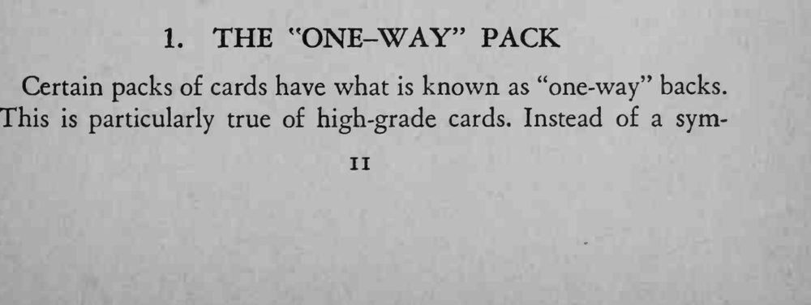
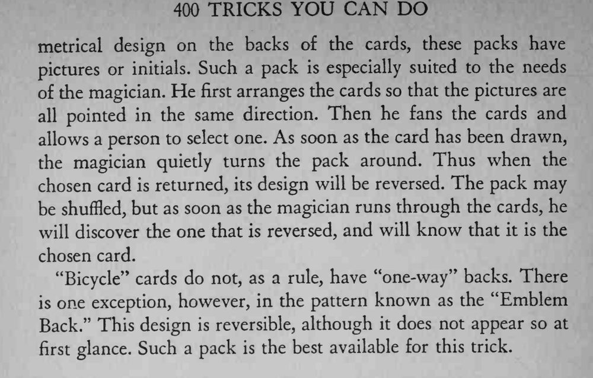

观众随便抽一张牌放回，魔术师只扫一眼整副牌的牌背，就能找出那张选牌。
Bicycle 牌通常没有单向牌背，例外是 Emblem Back 图案，最好的就是这种牌。


Certain packs of cards have what is known as "one-way'* backs. This is particularly true of high-grade cards. Instead of a sym- metrical design on the backs of the cards, these packs have pictures or initials. Such a pack is especially suited to the needs of the magician. He first arranges the cards so that the pictures are all pointed in the same direction. Then he fans the cards and allows a person to select one. As soon as the card has been drawn, the magician quietly turns the pack around. Thus when the chosen card is returned, its design will be reversed. The pack may be shuffled, but as soon as the magician runs through the cards, he will discover the one that is reversed, and will know that it is the chosen card. "Bicycle" cards do not, as a rule, have "one-way" backs. There is one exception, however, in the pattern known as the "Emblem Back." This design is reversible, although it does not appear so at first glance. Such a pack is the best available for this trick.